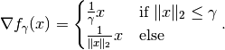

Huber.gradient¶
-
property
Huber.gradient¶ Gradient operator of the functional.
The gradient of the Huber functional is given by

Examples
Check that the gradient norm is less than the norm of the one element:
>>> space = odl.uniform_discr(0, 1, 14) >>> norm_one = space.one().norm() >>> x = odl.phantom.white_noise(space) >>> huber_norm = odl.solvers.Huber(space, gamma=0.1) >>> grad = huber_norm.gradient(x) >>> tol = 1e-5 >>> grad.norm() <= norm_one + tol True
Redo previous example for a product space in two dimensions:
>>> domain = odl.uniform_discr([0, 0], [1, 1], [5, 5]) >>> space = odl.ProductSpace(domain, 2) >>> norm_one = space.one().norm() >>> x = odl.phantom.white_noise(space) >>> huber_norm = odl.solvers.Huber(space, gamma=0.2) >>> grad = huber_norm.gradient(x) >>> tol = 1e-5 >>> grad.norm() <= norm_one + tol True